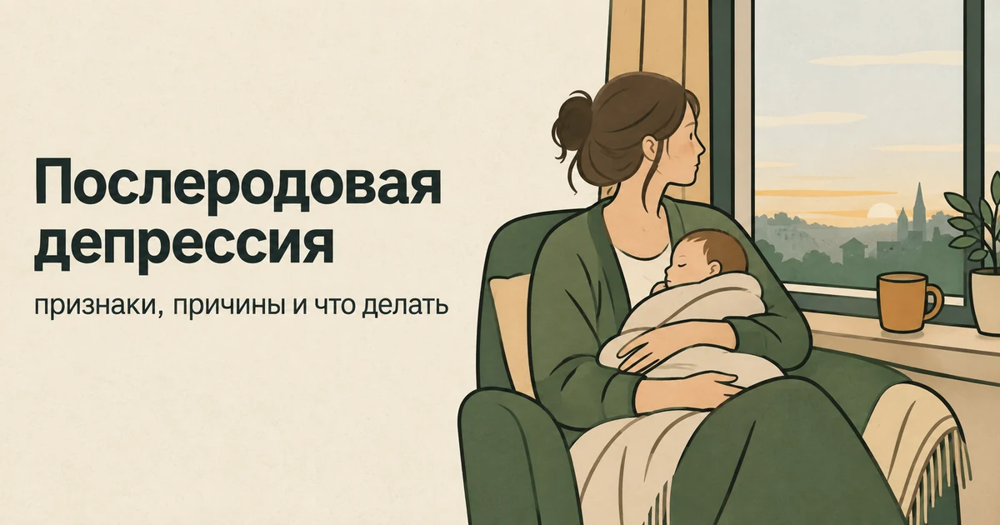
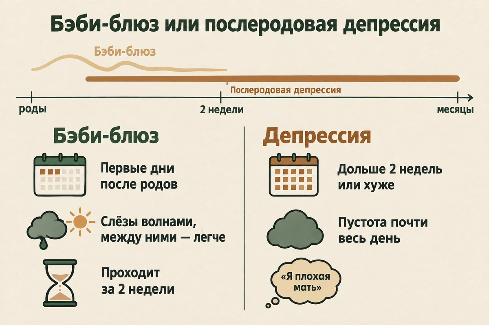
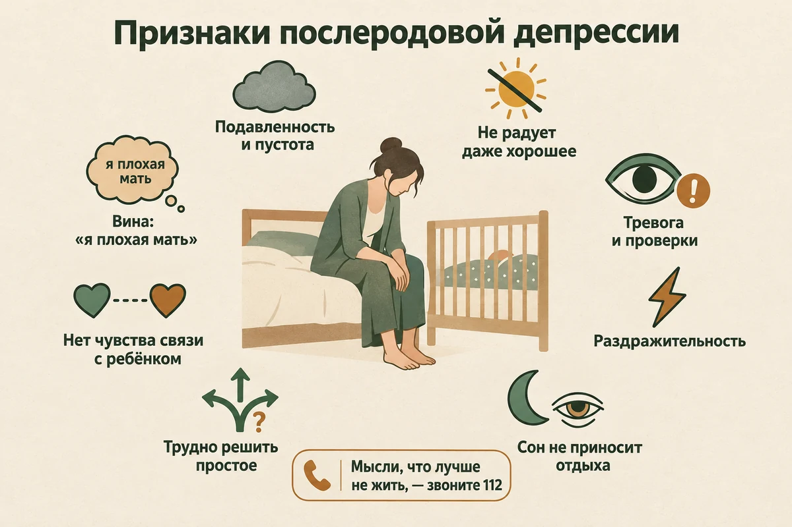
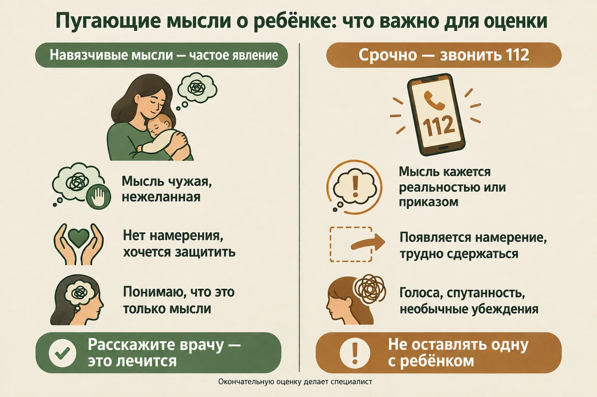
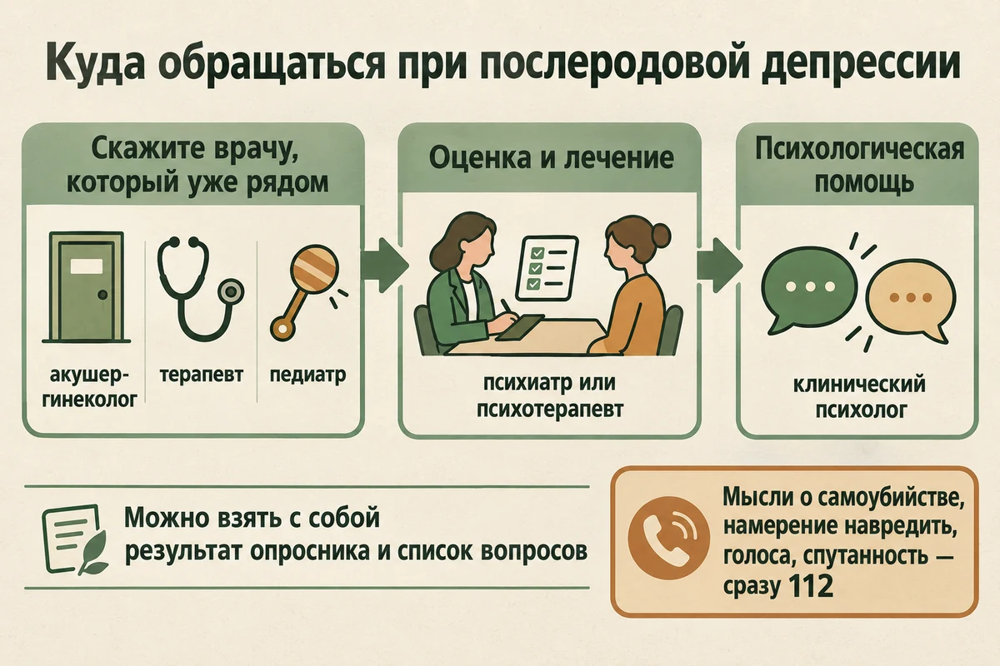
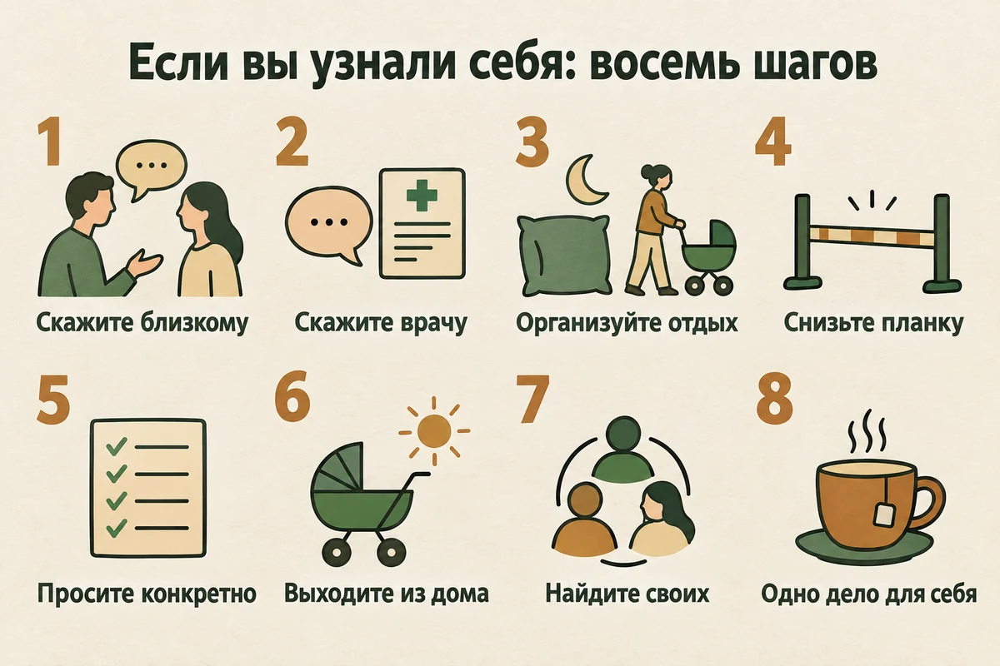
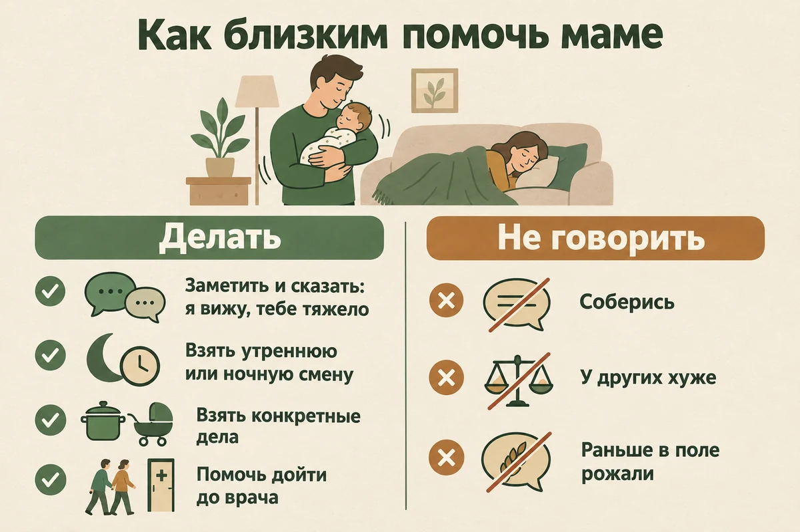

Главная → Блог → Послеродовая депрессия
Послеродовая депрессия: признаки, причины и что делать
Обновлено: 13.09.2026 · Источники проверены: 13.09.2026 · 21 минута чтения

Послеродовая депрессия — это не обычная усталость после рождения ребёнка. Если подавленность, тревога, пустота, потеря интереса или чувство вины держатся больше двух недель или мешают заботиться о себе и ребёнке, стоит обратиться за профессиональной помощью. Это частое состояние: по данным ВОЗ, психическое расстройство, прежде всего депрессию, переживают около 13% недавно родивших женщин в мире. Оно не говорит о слабости или нелюбви к ребёнку и хорошо лечится — во многих случаях без отказа от грудного вскармливания. Ниже — как отличить её от бэби-блюза, что значат страшные мысли о ребёнке, как её диагностируют и лечат и куда обращаться.
- Как понять, что это не просто усталость
- Бэби-блюз или послеродовая депрессия
- Признаки послеродовой депрессии
- Когда начинается и сколько длится
- Почему возникает
- «Я не чувствую любви к ребёнку»
- Страшные мысли о ребёнке: ОКР или опасность
- Послеродовой психоз: когда срочно
- Послеродовая депрессия у отцов
- Как диагностируют
- Что делать, если вы узнали себя
- Как лечат: психотерапия и лекарства при кормлении грудью
- «Заберут ребёнка», «поставят на учёт»
- Как помочь: партнёру и близким
- Что затягивает депрессию
- Куда обращаться
- Частые вопросы
Как понять, что это послеродовая депрессия, а не просто усталость
Усталость в первые месяцы с ребёнком есть почти у всех, и сама по себе она не признак депрессии. Разница в том, что усталость отступает, когда удаётся выспаться, получить помощь или провести пару часов без ребёнка, а депрессия — нет. При депрессии плохо почти весь день и почти каждый день, радость не возвращается даже в хорошие моменты, а мысли о себе окрашиваются виной: «я не справляюсь», «я плохая мать», «со мной что-то не так».
Ориентиров три. Время: состояние держится больше двух недель после родов или усиливается. Глубина: пропал интерес не только к делам, но и к тому, что раньше радовало. Влияние: становится трудно заботиться о себе и ребёнке, принимать простые решения, выходить из дома. Если хотя бы один из этих ориентиров про вас, стоит поговорить с врачом. Если появились мысли о том, что жить не хочется, — не ждать вовсе.
Бэби-блюз или послеродовая депрессия: как отличить
Бэби-блюз, или послеродовая хандра, начинается в первые дни после родов: хочется плакать без причины, настроение скачет, всё раздражает, а через час может стать почти хорошо. В метаанализе 26 исследований 2020 года его в среднем обнаруживали у 39% родивших женщин, хотя в отдельных исследованиях разброс был от 14% до 76%. Это частое кратковременное состояние, связанное с сочетанием гормональных изменений, недосыпа, физического восстановления и резкой смены привычного образа жизни. По данным NHS, оно обычно проходит в течение двух недель после родов и лечения не требует — нужны отдых и помощь.
Послеродовая депрессия устроена иначе: она не волнами по часу, а фоном, не проходит к концу второй недели и меняет то, как человек видит себя.
| Бэби-блюз | Послеродовая депрессия | |
|---|---|---|
| Когда начинается | В первые дни после родов | В беременность, вскоре после родов или в любой момент первого года |
| Сколько длится | Обычно проходит за две недели | Дольше двух недель, без помощи — нередко месяцами |
| Как выглядит | Слёзы и перепады настроения, между ними — нормальные часы | Подавленность, пустота или тревога почти постоянно, радость не возвращается |
| Мысли о себе | «Я устала», «всё так непривычно» | «Я плохая мать», «я не справляюсь», «им без меня было бы лучше» |
| Сон | Нарушен в основном из-за режима ребёнка и восстановления после родов | Бессонница или, наоборот, сонливость; сон не приносит облегчения |
| Аппетит | Обычно без больших перемен | Пропадает или, наоборот, заметно растёт; еда перестаёт радовать |
| Что помогает | Отдых, сон, помощь по дому, поддержка | Отдых нужен, но его мало: нужна профессиональная помощь |

Признаки послеродовой депрессии
Послеродовая депрессия — это та же депрессия, только в особых обстоятельствах. Многие её признаки легко списать на новорождённого: «конечно, не сплю — он же просыпается». Поэтому полезно смотреть не на каждый признак отдельно, а на картину в целом и на то, сколько она длится. Основные признаки, которые перечисляет NHS:
- Подавленность или пустота большую часть дня, почти каждый день.
- Пропала радость и интерес — к ребёнку, к партнёру, к тому, что раньше нравилось.
- Безнадёжность и ощущение, что вы не справляетесь и не справитесь.
- Вина и чувство собственной никчёмности, мысль «я плохая мать».
- Сильная тревога и страхи, часто — за здоровье и безопасность ребёнка.
- Раздражительность и беспокойство, вспышки злости на близких и на себя.
- Нарушения сна, не связанные с ребёнком: не получается уснуть, даже когда есть возможность, или сон не восстанавливает.
- Трудно сосредоточиться и принимать решения — даже простые.
- Трудно почувствовать связь с ребёнком: ухаживаете, но как будто со стороны.
- Мысли о самоповреждении или о том, что лучше не жить. При этом признаке не ждут — это повод для срочной помощи.

Послеродовая депрессия не всегда выглядит как грусть
Многие ищут помощи не со словами «мне грустно», а со словами «мне постоянно страшно». Депрессия после родов может проявляться прежде всего тревогой:
- постоянный внутренний мотор и невозможность расслабиться, даже когда ребёнок спит;
- страх оставить ребёнка хоть на минуту и бесконечные проверки — дышит ли, не перегрелся ли;
- ощущение постоянной угрозы, будто что-то вот-вот случится;
- раздражительность и вспышки злости, после которых стыдно;
- приступы сердцебиения, нехватки воздуха, страха — похожие на панические атаки.
Тревога и депрессия в перинатальный период часто идут вместе, и помощь при них во многом общая. О том, как устроена сама депрессия и чем она отличается от выгорания и апатии, — в статье «Депрессия: 10 признаков, что делать и когда идти к врачу».
Как это звучит изнутри
Изнутри депрессия звучит не как список симптомов, а как фразы, которые женщина говорит себе: «все мамы справляются, а я нет»; «я должна быть счастлива, а мне всё равно»; «я просто функционирую»; «я смотрю на ребёнка и ничего не чувствую». Если вы узнаёте в них себя, это не доказательство, что вы плохой человек, — это похоже на депрессию.
Когда начинается и сколько длится
На практике послеродовая депрессия может начаться во время беременности, вскоре после родов или в течение первого года — например, когда закончилась помощь родственников, партнёр вышел на работу или ребёнок начал хуже спать. Поэтому врачи всё чаще говорят не «послеродовая», а «перинатальная депрессия».
В классификациях границы проведены формально. В американском руководстве DSM-5-TR уточнение «с началом в перинатальном периоде» ставят, если эпизод начался во время беременности или в первые четыре недели после родов. В МКБ-11 есть категория психических и поведенческих расстройств, связанных с беременностью, родами и послеродовым периодом; если состояние соответствует конкретному расстройству, например депрессивному эпизоду, оно кодируется и как это расстройство. Клинические руководства рассматривают перинатальный период шире — до года после родов. Для самой женщины важно одно: депрессия на пятом месяце после родов заслуживает помощи так же, как на второй неделе.
По данным NHS, послеродовая депрессия обычно отступает за 3–6 месяцев, но может длиться намного дольше, и при лечении выздоровление более вероятно. Поэтому лучше не рассчитывать только на то, что состояние пройдёт само: своевременная помощь уменьшает длительность и тяжесть страдания и помогает быстрее вернуться к обычной жизни.
Почему возникает послеродовая депрессия
Одной причины, которая объясняла бы все случаи, нет. NHS пишет, что точный механизм неизвестен, но свою роль, вероятно, играют стресс ухода за младенцем, недостаток сна и гормональные изменения. В зонтичном обзоре 77 метаанализов 2026 года самыми сильными факторами риска оказались депрессия в прошлом, плохая социальная поддержка, нарушения сна, насилие со стороны партнёра и незапланированная беременность. Авторы оговаривают, что качество доказательств по большинству факторов низкое, — это связи, а не доказанные причины.
Тело и сон
- Гормональные перемены. После родов резко меняется гормональный фон, а одновременно меняются сон, физическое состояние, нагрузка и привычная жизнь. У некоторых женщин сочетание этих факторов повышает уязвимость к депрессии.
- Хронический недосып. Сон кусками неделями подряд сам по себе ухудшает настроение, внимание и способность справляться со стрессом.
- Восстановление после родов — боль, осложнения, кесарево сечение, трудности с кормлением.
- Состояния, которые похожи на депрессию или усиливают её, — например, нарушения работы щитовидной железы или анемия. Они не обязательно причина депрессии, но могут давать похожую усталость и подавленность, поэтому врачу стоит рассказать и о телесном самочувствии.
Прошлый опыт
- Депрессия или тревожное расстройство в прошлом — в том числе во время беременности или после предыдущих родов.
- Тяжёлые или пугающие роды. Если роды ощущались как угроза жизни, после них может развиться не только депрессия, но и посттравматическое стрессовое расстройство — с воспоминаниями, кошмарами и избеганием. Как оно устроено, разобрано в статье «ПТСР: 12 признаков, почему возникает и как его лечат».
- Недоношенный или больной ребёнок, реанимация, долгие госпитализации.
- Потеря беременности или ребёнка в прошлом, долгий путь к беременности.
Поддержка и обстоятельства
- Нехватка поддержки — нет рядом никого, кто может забрать ребёнка на пару часов или просто выслушать.
- Трудности в отношениях, конфликты, одиночество в паре.
- Недавний сильный стресс — потеря работы, переезд, смерть близкого, денежные проблемы.
- Насилие в семье. Если дома небезопасно, это не та ситуация, которую нужно терпеть ради ребёнка: куда обратиться, есть в статье «Токсичные отношения» и в справочнике помощи.
Чего в списке нет: послеродовая депрессия не возникает оттого, что женщина «слишком себя жалеет» или «не создана для материнства». Она случается и у тех, кто долго планировал беременность, и у тех, кто рожает третьего. А высокие ожидания от себя — «я буду идеальной мамой» — скорее добавляют нагрузки, чем защищают.
«Я не чувствую любви к ребёнку»
Это одна из самых стыдных для женщины мыслей, и о ней молчат чаще всего. Ожидание, что любовь накроет в момент первой встречи, поддерживается фильмами и чужими рассказами. На деле у многих матерей — и без всякой депрессии — привязанность растёт постепенно, неделями и месяцами, через уход, кормление, первые улыбки.
При депрессии эта связь может ощущаться ещё слабее: депрессия приглушает способность чувствовать радость и тепло вообще — к ребёнку, к партнёру, к себе. NHS называет трудности со связью с ребёнком одним из признаков послеродовой депрессии, и по мере лечения эта способность обычно возвращается. Можно быть хорошей матерью и одновременно переживать депрессию — эти вещи друг другу не противоречат.
- Уход — уже связь. Кормить, переодевать, укачивать, откликаться на плач — это привязанность в действии, даже если тепла внутри пока не чувствуется.
- Близость через тело. Контакт кожа к коже, ношение на руках, купание могут поддерживать контакт с ребёнком, даже если чувство эмоциональной близости пока слабое.
- Не требуйте от себя чувств. Требование «я должна любить» только добавляет вины. Честнее сказать себе: «Сейчас я не чувствую, и это похоже на симптом».
- Скажите об этом врачу. Это важная информация для специалиста, а не повод для осуждения.
Страшные мысли о ребёнке после родов: ОКР или опасность
Мысль «а если я уроню его с лестницы», пугающая картинка, внезапное «а что, если я сделаю ему больно» — многие матери уверены после таких мыслей, что с ними что-то глубоко не так, и не рассказывают о них даже близким.
Исследования показывают, что такие мысли очень распространены. В работе 2008 года 100 первородящих матерей опрашивали во время беременности и через 4 и 12 недель после родов. Нежелательные навязчивые мысли о случайном вреде ребёнку были у всех участниц, а мысли о намеренном вреде — почти у половины. Связи таких мыслей с грубым обращением с ребёнком авторы практически не нашли, а чаще они возникали на фоне сильного стресса и нехватки поддержки. Одно из объяснений: после рождения ребёнка повышенная настороженность к возможным опасностям может способствовать появлению нежелательных образов и мыслей о вреде.
Пугающая, нежелательная мысль сама по себе не означает намерения причинить вред — особенно если она воспринимается как чуждая, человек не хочет её осуществлять и старается защитить ребёнка. Но по одному только ощущению страха отличить безопасное от опасного нельзя: при психозе человек тоже может быть напуган. Для оценки важны другие вещи.
| Навязчивые мысли | Повод для срочной оценки | |
|---|---|---|
| Как воспринимаются | Нежелательные, противоречат собственным желаниям, «как будто не мои» | Воспринимаются как реальность или убеждение: «так нужно», «так велят», «ребёнок не мой» |
| Намерение | Нет желания это делать; человек старается защитить ребёнка | Появляется намерение или желание причинить вред, трудно контролировать поведение |
| Связь с реальностью | Сохранена: человек понимает, что это мысли | Нарушена: голоса или видения, бредовые идеи, спутанность, резкое возбуждение без сна |
| Что может стоять за этим | Тревога, депрессия, послеродовое ОКР | Чаще всего послеродовой психоз |
| Что делать | Рассказать врачу или психотерапевту — это хорошо лечится | Звонить 112 или 103 и не оставлять женщину одну с ребёнком |

Если навязчивые мысли занимают часы, если из-за них вы боитесь оставаться с ребёнком наедине, постоянно проверяете, отказываетесь его купать, — это похоже на послеродовое обсессивно-компульсивное расстройство, и с ним хорошо работают. Окончательную оценку делает специалист, особенно если мысли становятся частыми, появляется намерение, ощущение потери контроля или другие необычные переживания. Как устроено ОКР и почему страх причинить вред встречается при нём так часто, разобрано в статье «ОКР: симптомы, виды, причины и лечение», об обычных навязчивых мыслях — в материале «Навязчивые мысли».
Послеродовой психоз: признаки и когда срочно
Послеродовой психоз встречается редко, но о нём важно знать заранее каждой семье. По данным NHS, он развивается примерно у одной из тысячи родивших женщин и начинается обычно внезапно, в первые две недели после родов — часто в течение нескольких часов или дней. Британское руководство NICE при подозрении на послеродовой психоз требует немедленной оценки специалистом — в течение четырёх часов после направления.
Сама женщина при психозе может не осознавать, что с ней что-то не так, поэтому заметить это должны близкие. Риск выше при биполярном расстройстве или шизофрении, если послеродовой психоз уже был после прошлых родов или если тяжёлые перинатальные расстройства были у близких родственников. В таких случаях план наблюдения стоит обсудить с психиатром ещё во время беременности. По данным NHS, при своевременном лечении большинство женщин полностью выздоравливают.
Послеродовой психоз — не «тяжёлая послеродовая депрессия», а другое состояние. Депрессия не «переходит в психоз» сама по себе, но о признаках психоза полезно знать, чтобы не принять его за усталость и не потерять время.
Послеродовая депрессия у отцов
Депрессия после рождения ребёнка бывает и у мужчин. В метаанализе 43 исследований с участием более 28 тысяч человек, опубликованном в JAMA в 2010 году, депрессия во время беременности партнёрши или в первый год после родов обнаруживалась примерно у 10% отцов, чаще всего — через три–шесть месяцев после рождения ребёнка. Депрессия отца была умеренно связана с депрессией матери.
У мужчин она часто выглядит не как слёзы, а как раздражительность, уход в работу, игры или телефон, алкоголь, отстранённость от ребёнка. Со стороны это легко принять за равнодушие. Если вы узнаёте это в себе — признаки, шаги и лечение из этой статьи относятся и к вам. Если депрессия затягивается на фоне общей перегрузки, пригодится и статья об эмоциональном выгорании.
Как диагностируют послеродовую депрессию
Диагноз ставит врач — психиатр или психотерапевт; первым заметить депрессию может и акушер-гинеколог, терапевт или педиатр. Никакого одного анализа «на послеродовую депрессию» нет: оценка строится на разговоре. Обычно врач:
- расспрашивает о симптомах — настроении, интересе, сне, аппетите, силах, чувстве вины — и о том, как давно они появились и насколько мешают жить;
- спрашивает о мыслях о самоповреждении и самоубийстве. Это стандартный вопрос, его задают всем, и честный ответ помогает подобрать безопасную помощь;
- отдельно оценивает тревогу и навязчивые мысли, в том числе о ребёнке;
- уточняет, были ли раньше периоды необычно приподнятого настроения и много ли энергии при малом сне. Это нужно, чтобы не пропустить биполярное расстройство: от этого сильно зависит лечение;
- спрашивает о прошлых эпизодах депрессии, о родах, поддержке, отношениях, безопасности дома;
- может предложить опросник. Для перинатального периода разработана Эдинбургская шкала послеродовой депрессии (EPDS), используют и общий опросник PHQ-9. Результат опросника — повод для разговора, а не диагноз;
- при необходимости назначает анализы, чтобы исключить состояния с похожими симптомами — например, нарушения работы щитовидной железы или анемию.
Если хочется заранее понять, насколько выражены симптомы, можно пройти тест на депрессию PHQ-9. Он создан не специально для послеродового периода и не устанавливает диагноз, но его результат можно взять с собой к врачу и обсудить.

Что делать, если вы узнали себя
Самопомощь не заменяет лечения, если депрессия уже есть. Но эти шаги облегчают состояние, пока вы ищете помощь, и помогают восстанавливаться.
- Скажите вслух одному человеку. Партнёру, маме, подруге: «Мне плохо не просто от усталости. Я думаю, это может быть депрессия». Пока о состоянии никто не знает, помощи не будет.
- Скажите врачу, которого вы уже видите. Акушеру-гинекологу, педиатру на осмотре ребёнка, терапевту. Достаточно фразы «мне эмоционально очень тяжело уже несколько недель».
- Организуйте более долгий отрезок сна или отдыха. Хотя бы один непрерывный отрезок, когда это возможно: партнёр берёт раннее утро, родственник приходит на несколько часов, часть ночного ухода организуется так, как безопасно и приемлемо для вашей семьи.
- Снизьте планку. Чистая квартира, домашний обед и идеальный режим — не мерило того, хорошая ли вы мать.
- Просите конкретно. Не «помогите чем-нибудь», а «погуляй с коляской с 11 до 13», «приготовь еду на два дня», «посиди с ребёнком, пока я приму душ».
- Выходите из дома, хотя бы ненадолго. NHS среди мер самопомощи называет регулярное движение; в обзоре факторов риска физическая активность после родов была связана с меньшей выраженностью депрессии. Достаточно прогулки с коляской при дневном свете.
- Найдите «своих». Встречи и чаты молодых мам, группы поддержки при женских консультациях и перинатальных центрах. Выбирайте сообщества, где поддерживают, а не соревнуются.
- Каждый день — одно маленькое дело для себя. Горячий чай, пока он горячий, десять минут с книгой, душ без спешки — как часть ухода за человеком, который ухаживает за ребёнком.

Бывает, что сказать «мне плохо» близким пока не получается — стыдно или страшно. Проговорить это можно анонимно, без регистрации и в любое время суток, в том числе в три часа ночи во время кормления. Это не заменит врача, но может помочь сформулировать, с чем к нему идти.
Поговорить о своём состоянииКак лечат: психотерапия и лекарства при кормлении грудью
Послеродовая депрессия хорошо лечится, и выбор метода зависит от тяжести состояния. Британское руководство NICE при лёгкой и умеренной депрессии в перинатальный период предлагает рассмотреть самопомощь с поддержкой специалиста, а при умеренной и тяжёлой — интенсивную психотерапию, например КПТ, лекарства или их сочетание, выбирая вместе с женщиной и с учётом того, кормит ли она грудью.
Психотерапия
Лучше всего изучены когнитивно-поведенческая терапия и межличностная психотерапия. В систематическом обзоре 44 рандомизированных исследований, опубликованном в Annals of Internal Medicine в 2025 году, и КПТ, и межличностная терапия, вероятно, эффективнее обычной помощи в снижении депрессивных симптомов; эффективной может быть и поведенческая активация. В сетевом метаанализе 78 исследований 2026 года в British Journal of Psychiatry КПТ оказалась самым последовательно подтверждённым методом при перинатальной депрессии и тревоге, с сохранением эффекта при депрессии; межличностная терапия и подходы на основе осознанности тоже показали результат, но с меньшей уверенностью в доказательствах.
Что обычно происходит в терапии:
- Разбирают мысли, которые держат депрессию: «хорошая мать всегда справляется», «попросить помощи — значит признать поражение». Их не заменяют на «всё прекрасно», а проверяют на соответствие фактам.
- Возвращают действия, которые поддерживают настроение, — маленькими шагами, с поправкой на реальный режим с младенцем.
- Работают с тревогой и навязчивыми мыслями, если они есть.
- В межличностной терапии — с отношениями, сменой ролей и поддержкой: она особенно уместна, когда рождение ребёнка перевернуло жизнь пары и привычные связи.
Если главная опора депрессии — жёсткий внутренний голос «ты всё делаешь не так», с ним работает терапия, сфокусированная на сострадании. Практики осознанности помогают замечать тревожные мысли и не тонуть в них.
Лекарства и грудное вскармливание
При умеренной и тяжёлой депрессии, или если психотерапия не помогает, врач может предложить антидепрессанты. Главный страх здесь — кормление грудью, и из-за него многие откладывают лечение. По данным NHS, многие антидепрессанты могут применяться при грудном вскармливании, но выбор препарата зависит от конкретной ситуации: тяжести состояния, прошлого лечения, здоровья ребёнка. NICE отдельно требует обсуждать с женщиной и пользу кормления, и возможные риски лекарств при кормлении, и риски отмены некоторых препаратов ради того, чтобы кормить. Поэтому важно сразу сказать врачу, что вы кормите, и не решать в одиночку ни бросить кормление, ни отказаться от лечения.
Появились и препараты, разработанные специально для послеродовой депрессии. Например, зураналон одобрен в США в 2023 году: в исследовании третьей фазы двухнедельный курс уменьшал симптомы тяжёлой послеродовой депрессии сильнее плацебо уже к третьему дню. При этом данных о его безопасности при кормлении грудью пока мало. Одобрение в США не означает, что препарат доступен или показан всем: выбор лечения зависит от тяжести состояния, сопутствующих заболеваний, кормления и того, какие препараты доступны в конкретной стране.
Как понять, что лечение помогает
Выздоровление редко выглядит как резкое «проснулась — и прошло». Чаще сначала немного улучшается сон и прибавляется сил, потом появляются хорошие часы, потом хорошие дни, возвращается способность радоваться. Если за несколько недель лечения ничего не меняется, лечение нужно пересмотреть вместе с врачом.
«Заберут ребёнка», «поставят на учёт»: страхи, из-за которых молчат
Многие женщины молчат о депрессии не потому, что не понимают, что им плохо, а потому, что боятся последствий.
- «Если я скажу, что мне плохо, у меня заберут ребёнка». NHS прямо пишет, что этот страх понятен, но такое случается очень редко. Обращение за помощью — не доказательство того, что женщина плохо заботится о ребёнке. Наоборот, раннее обращение позволяет получить поддержку и восстановить способность справляться с повседневной нагрузкой.
- «Меня поставят на учёт». Сам факт обращения к психиатру не означает постановки на учёт. Консультативно-лечебная помощь оказывается при добровольном обращении. Диспансерное наблюдение закон предусматривает при хроническом и затяжном психическом расстройстве с тяжёлыми стойкими или часто обостряющимися проявлениями, и решение принимает комиссия врачей-психиатров. Как это устроено и что может влиять на справки — в разделе «Правда про постановку на учёт» справочника помощи; в конкретной юридической ситуации нормы стоит уточнять у юриста.
- «Скажут, что я плохая мать». Специалисты, работающие с этим периодом, видят такие состояния постоянно: по данным ВОЗ, психическое расстройство, чаще всего депрессию, переживает примерно каждая восьмая недавно родившая женщина.
- «Родные скажут: соберись, раньше в поле рожали». Раньше о депрессии просто не говорили — это не значит, что её не было. Если близкие не понимают, покажите им раздел «Как помочь» ниже.
Как помочь: партнёру и близким
Женщине с послеродовой депрессией часто трудно самой попросить о помощи, а иногда даже заметить, что с ней происходит. Поэтому роль близких здесь особенно велика.
- Замечайте перемены. Если прошло больше двух недель после родов, а она всё время плачет или стала «пустой», перестала радоваться, говорит о себе «я плохая мать», не может отдохнуть, даже когда есть возможность, — это повод поговорить.
- Говорите без упрёка. Не «что с тобой такое», а «я вижу, что тебе очень тяжело. Это похоже не просто на усталость. Давай вместе разберёмся».
- Берите на себя конкретное. Ночную или утреннюю смену, прогулку, готовку, уборку, запись к врачу. Спросите: «Что мне взять на себя на этой неделе?»
- Защищайте её отдых. Один долгий отрезок сна может сделать больше, чем десять добрых слов.
- Помогите дойти до врача. Найдите специалиста, запишите, поезжайте вместе, посидите с ребёнком во время приёма.
- Не спорьте с чувствами. «Как ты можешь так говорить, у тебя же здоровый ребёнок» только добавляет стыда. Лучше: «Я слышу, что тебе сейчас так».
- Позаботьтесь и о себе. Поддерживать близкого с депрессией тяжело, а у отцов после родов тоже бывает депрессия.
Если слышите, что ей не хочется жить, или замечаете признаки послеродового психоза из раздела выше, — не ждите, пока она сама решит обратиться. Звоните 112. Как говорить с человеком в тяжёлом состоянии, частично разобрано и в статье «Как поддержать человека в горе».

Что затягивает послеродовую депрессию
- Ждать, что пройдёт само. Иногда проходит, но может тянуться месяцами, и никто не знает заранее, какой вариант ваш.
- Делать всё самой, чтобы доказать, что справляешься. Изоляция и перегрузка поддерживают депрессию.
- Сравнивать себя с мамами из соцсетей. Там показывают лучшие пять минут дня, а не ночь, когда всё валится из рук.
- Читать форумы с чужими страшными историями, особенно ночью: тревога найдёт подтверждение любому страху.
- Бросать лечение, как только стало легче. Отменять лекарства самостоятельно нельзя — это делается постепенно и вместе с врачом.
- Алкоголь «чтобы расслабиться». Он ухудшает сон и на следующий день усиливает тревогу — как это устроено, разобрано в статье про алкоголь и тревогу.
- Бесконечное самообвинение. Вина — один из симптомов депрессии, а не доказательство вашей вины. Как отличить полезную вину от разрушительной, — в статье «Постоянное чувство вины».
Куда обращаться при послеродовой депрессии
Обратиться к врачу стоит, если хотя бы одно из этого про вас:
- подавленность, пустота или тревога держатся больше двух недель после родов или усиливаются;
- вы почти не чувствуете радости, в том числе рядом с ребёнком;
- сон не восстанавливает, даже когда есть возможность отдохнуть;
- постоянно думаете, что вы плохая мать и не справляетесь;
- пугающие мысли о ребёнке занимают много времени или заставляют избегать его;
- после родов появились навязчивые воспоминания о них, кошмары, желание не думать и не говорить о родах;
- вы стали снимать напряжение алкоголем.
С кого начать. С того врача, который уже рядом: акушера-гинеколога в женской консультации, терапевта или педиатра на осмотре ребёнка. Оценить депрессию и назначить лечение может психиатр или психотерапевт. В государственных медицинских организациях такая помощь во многих случаях доступна по полису ОМС, но условия зависят от региона и конкретной организации. Психологическую помощь оказывают клинические психологи; во многих перинатальных центрах и женских консультациях есть свои психологи. Если вам нужна именно психотерапия, уточните квалификацию специалиста. Бесплатные варианты собраны в справочнике бесплатной психологической помощи.
Статья носит просветительский характер и не заменяет консультацию специалиста. Если вам прямо сейчас невыносимо тяжело или появляются мысли о том, чтобы причинить себе вред, позвоните: 112 — при угрозе жизни; +7 (495) 989-50-50 — круглосуточная линия ЦЭПП МЧС России; 8-800-2000-122 (с мобильного — 124) — детям, подросткам и их родителям; 051 (с мобильного 8 (495) 051) — для Москвы. Куда ещё можно обратиться бесплатно — в справочнике помощи.
Частые вопросы
Как понять, что у меня послеродовая депрессия, а не просто усталость?
Усталость отступает, когда удаётся отдохнуть, а депрессия — нет. Поводом насторожиться служат подавленность, пустота или тревога дольше двух недель после родов, отсутствие радости даже в хорошие моменты, постоянное чувство вины и мысли «я плохая мать», сон, который не восстанавливает. Точно разобраться поможет врач: об этом стоит сказать акушеру-гинекологу, педиатру на приёме или терапевту.
Когда начинается послеродовая депрессия и сколько длится?
Она может начаться ещё во время беременности, вскоре после родов или в любой момент первого года — в том числе через несколько месяцев. Бэби-блюз, в отличие от неё, начинается в первые дни и проходит примерно за две недели. По данным NHS, послеродовая депрессия обычно отступает за 3–6 месяцев, но может длиться намного дольше, и при лечении выздоровление более вероятно.
Может ли быть послеродовая депрессия, если я очень люблю ребёнка?
Да. Депрессия не измеряется любовью к ребёнку: многие женщины с послеродовой депрессией очень любят детей, заботятся о них и при этом чувствуют пустоту, вину, тревогу и бессилие. Можно быть хорошей матерью и одновременно переживать депрессию — одно другому не противоречит.
Бывает ли послеродовая депрессия без грусти, только с тревогой?
Да. Иногда на первый план выходит не подавленность, а постоянная тревога: страх за ребёнка, невозможность расслабиться, бесконечные проверки, раздражительность, приступы паники. Тревога и депрессия в перинатальный период часто идут вместе, и о таком состоянии тоже стоит сказать врачу — оно лечится.
Можно ли лечить послеродовую депрессию и продолжать кормить грудью?
Во многих случаях да. Психотерапия на кормление не влияет, а многие антидепрессанты могут применяться при грудном вскармливании. Выбор конкретного препарата зависит от ситуации — тяжести состояния, прошлого лечения, здоровья ребёнка, — поэтому важно сразу сказать врачу, что вы кормите. Бросать кормление или отказываться от лечения, не обсудив это со специалистом, не нужно.
Бывает ли послеродовая депрессия у мужчин?
Да. В метаанализе 43 исследований, опубликованном в JAMA в 2010 году, депрессия во время беременности партнёрши или в первый год после родов обнаруживалась примерно у 10% отцов, а в период с трёх до шести месяцев после рождения ребёнка — чаще. У мужчин она нередко выглядит не как слёзы, а как раздражительность, уход в работу, игры или алкоголь.
Я боюсь навредить ребёнку — значит ли это, что я опасна?
Сама по себе нежелательная пугающая мысль не означает намерения причинить вред. Такие мысли очень часты у молодых родителей: в исследовании первородящих матерей мысли о случайном вреде ребёнку были у всех, а о намеренном — почти у половины. Но если мысли занимают много времени, заставляют избегать ребёнка или пугают всё сильнее, стоит обратиться к специалисту — окончательную оценку делает он. Если появляется намерение причинить вред, трудно контролировать поведение, появились голоса или необычные убеждения, звоните 112.
Поставят ли на учёт, если обратиться к психиатру после родов?
Сам факт обращения за помощью не означает постановки на учёт. Консультативно-лечебная помощь оказывается при добровольном обращении. Диспансерное наблюдение закон предусматривает при хроническом и затяжном психическом расстройстве с тяжёлыми стойкими или часто обостряющимися проявлениями, и решение о нём принимает комиссия врачей-психиатров. Подробнее — в справочнике бесплатной помощи.
Проходит ли послеродовая депрессия сама?
Иногда проходит, но может длиться месяцами и дольше, и заранее это не угадать. Поэтому лучше не рассчитывать только на то, что состояние пройдёт само: своевременная помощь уменьшает длительность и тяжесть страдания и помогает быстрее вернуться к обычной жизни.
К какому врачу идти с послеродовой депрессией?
Начать можно с того врача, который уже рядом: акушера-гинеколога в женской консультации, терапевта или педиатра, к которому вы ходите с ребёнком, — достаточно сказать, что вам плохо эмоционально. Оценить состояние и назначить лечение может психиатр или психотерапевт. Психологическую помощь оказывают клинические психологи. Если есть мысли о самоубийстве, намерение причинить вред, спутанность или необычные убеждения, нужна неотложная помощь — 112.
Как подготовлен материал. Текст подготовлен редакцией AI Therapist. Мы опираемся на клинические руководства (NICE, канадское руководство CANMAT 2024 по перинатальным расстройствам настроения и тревоги), материалы ВОЗ и NHS и рецензируемые исследования; цифры приводим по первоисточникам, ссылки стоят прямо в тексте. Самопомощь отделяем от лечения, неотложные состояния выделяем отдельно. Анкеты для самодиагностики послеродовой депрессии на странице не воспроизводим: опросники из раздела о диагностике — инструменты скрининга, их результат обсуждается со специалистом. Статья носит просветительский характер, не является медицинской рекомендацией и не заменяет консультацию специалиста — диагноз ставит и лечение назначает врач.
Источники: ВОЗ — Perinatal mental health, NHS — Postnatal depression, NHS — Postpartum psychosis, NICE CG192 — Antenatal and postnatal mental health, CANMAT 2024 Clinical Practice Guideline for the Management of Perinatal Mood, Anxiety, and Related Disorders, Canadian Journal of Psychiatry, 2025, Rezaie-Keikhaie K. et al. «Systematic Review and Meta-Analysis of the Prevalence of the Maternity Blues in the Postpartum Period», JOGNN, 2020, Xu M. et al. «Risk factors for postpartum depression: an umbrella review», Frontiers in Public Health, 2026, Fairbrother N., Woody S. R. «New mothers' thoughts of harm related to the newborn», Archives of Women's Mental Health, 2008, Paulson J. F., Bazemore S. D. «Prenatal and postpartum depression in fathers and its association with maternal depression: a meta-analysis», JAMA, 2010, Couch E. et al. «Effectiveness of Psychological Therapies for Depression During the Perinatal Period», Annals of Internal Medicine, 2025, Leng L. L. et al. «Efficacy of psychological treatments for perinatal depression and anxiety: systematic review and network meta-analysis», British Journal of Psychiatry, 2026, Sockol L. E. «A systematic review of the efficacy of cognitive behavioral therapy for treating and preventing perinatal depression», Journal of Affective Disorders, 2015, Deligiannidis K. M. et al. «Zuranolone for the Treatment of Postpartum Depression», American Journal of Psychiatry, 2023, Barnes K. N. et al. «Zuranolone: The First FDA-Approved Oral Treatment Option for Postpartum Depression», Annals of Pharmacotherapy, 2024, Закон РФ от 02.07.1992 № 3185-1 «О психиатрической помощи и гарантиях прав граждан при её оказании», ст. 26–27. Источники проверены 13.09.2026.
Кто отвечает за содержание сайта и по каким правилам мы готовим материалы — на странице о проекте.
Читать также
- Депрессия: 10 признаков, что делать и когда идти к врачу — как устроена депрессия в целом.
- ОКР: симптомы, виды, причины и лечение — если пугающие мысли о ребёнке не отпускают.
- ПТСР: 12 признаков, почему возникает и как его лечат — если после тяжёлых родов остались воспоминания и кошмары.
- Постоянное чувство вины: 7 шагов, чтобы перестать себя грызть — если «я плохая мать» звучит в голове постоянно.
- Как справиться с одиночеством: 8 шагов, когда рядом никого нет — если в декрете не с кем поговорить.
- Когнитивно-поведенческая терапия — самый изученный психологический метод при перинатальной депрессии.